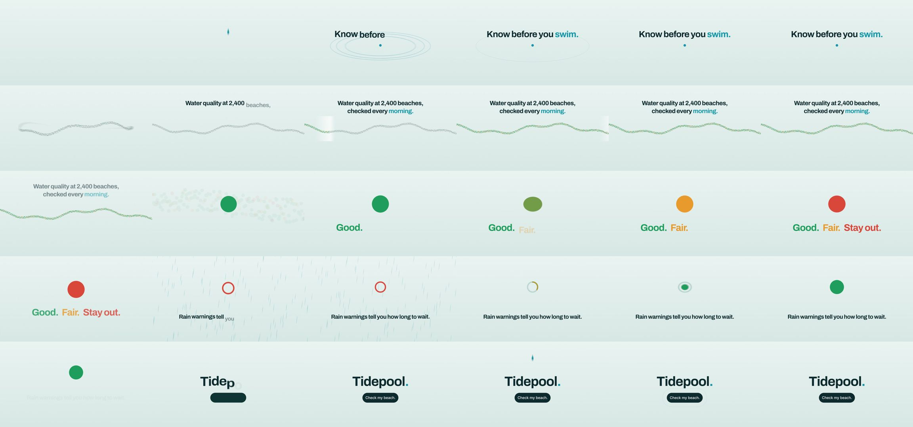

feitangyuan/onetake: test run, 2026-10-11
The same brief for every skill: a 15-second promo for a made-up app, five fixed lines of on-screen copy, 1920 x 1080 at 30 frames per second. Claude Code (Claude Opus 5.5) made it with the skill in a throwaway sandbox with no API keys for video, image or voice models. 8.5 minutes; sound: yes. All results · The brief · How it is checked
One drop of water carries the whole film from line to line, with no cuts.
The four checks
| Renders to a playable file | pass | H.264 |
|---|---|---|
| Length, size and frame rate as asked | pass | 15.0 s, 1920x1080, 30.0 fps |
| All five lines readable | pass | 5 of 5 |
| The picture moves | pass | 45% of sampled frame pairs held still |
Frames sampled twice a second

How it was made (the session's closing message)
The video is rendered with the onetake skill. It's 15.0 s, 1920×1080, 30 fps, H.264, with a synthesised sound track. **What it shows:** A single drop of water carries the whole film: 1. It falls and lands with ripples under "Know before you swim." 2. It splits into 2,400 dots along a coastline. A morning light sweeps along it, setting each dot green, amber or red, under "Water quality at 2,400 beaches, checked every morning." 3. The camera whips onto one beach, which grows into a disc. The disc turns green, amber and red as "Good. Fair. Stay out." lands word by word. 4. Rain falls and the disc hollows into a ring. The ring drains back to green and refills, under "Rain warnings tell you how long to wait." 5. The disc becomes a "Check my beach." button under "Tidepool." A last drop presses it, and the frame holds still to the end. The on-screen copy is exactly the brief's five lines, in order, with nothing added: no other text, logos or claims, and no voice-over. The look is a palette and font set I made for this film. **Checks:** The skill's final check (`verify_promo.py`) passes on the rendered file, with every scene change carried by the drop rather than cut. From frames taken out of the video I found one problem: the button was growing over line 4 while it faded. I fixed that and re-rendered. **Decisions made without asking**, as you instructed: - I picked the concept, a look made for this film, and the storyboard myself, where the skill would have asked you to choose. - Sound uses only the skill's built-in synthesised palette, with no music or downloaded files. - I didn't do the skill's 4K/60 fps final render, because the brief asks for 1080p at 30 fps. **Changes to this machine:** - I installed Python packages the skill needs (numpy, scipy, Pillow, matplotlib, fonttools, brotli, opencv) into the user site with `pip --user --break-system-packages`. - I symlinked `/usr/bin/chromium` into Playwright's browser cache, because Playwright's own browser wasn't installed. The project is in `~/work/project`: `comp.html`, `look.json`/`look.js`, `score.py`/`sfx.wav`, and a `README.md` with the concepts, beat sheet and render commands. DELIVERABLE: ~/work/output/video.mp4